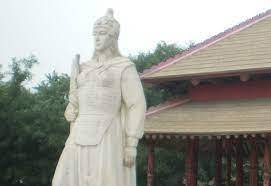
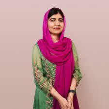

Fu Hao (1200 BC)
Lady Fu Hao broke the tradition by serving as both a high priestess and military general. According to sources, Fu Hao was considered the most powerful military leader of her time.
Unsung Heroes of the World- Women
As it is rightly said, "Behind the success of every man, is a woman."
There are many things that are unknown to most of us. Women are generally marginalized and moved to the fringes of the society.But we know that marginalization is a wrong thing to do, by the standards of both law, and our conscience. With the help of awareness raising programs, the current generation is trying to wipe these stereotypical beliefs out and bring women back to glory. But unbeknownst to most of us, women have had to endure a silent pain, the pain of sacrifice! Here, we will be looking at some famous, and not so famous women and also understand why (in my opinion), they are considered as one of the marginalized groups of the society.
An adult human female is generally called a "woman". Their gender is denoted by the symbol ♀ of Venus. An astounding fact is that the planet "Venus", named after the Roman goddess of beauty and love, is the only planet named after a female! A woman is called a "girl" before she reaches the age of adulthood (generally considered as 18 years of age). Women are an integral part of the society. They need to be safeguarded and assissted for the society to progress in its development. Any society that discriminates against women is considered to be under-developed or not at all developed.
Women have had a role to play since the ancient times. There are many women who have fought bravely on the battlefield of war and also in the societal battlefield against gender discrimination. We will be looking at a few women who were/are not so famous, but make/made an impact on the world.
| Ancient Period | Modern Period |
|---|---|
|

|

|